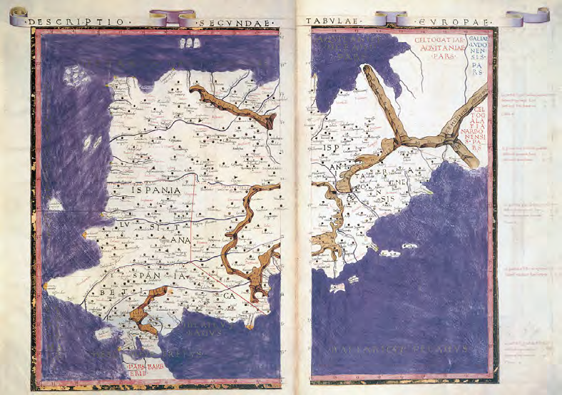

Un mapa es la representación de la Tierra, o de una parte de ella, sobre una superficie plana.

Mapa de España de una edición de la Geografía de Ptolomeo, publicada en Florencia entre 1476 y 1478
Todos los mapas responden a dos preguntas: ¿Qué? ¿Dónde?
MAPA proviene del latín "mappa", pañuelo o servilleta, en alusión a las telas donde se dibujaban o pintaban los mapas.
Palabra inventada en 1839 por un portugués (Vizconde de Santarem) "Invento esta palavra (Cartografía) já que ahí se tem inventado tantas"
Información:
de la elevación sobre el nivel del mar
de la temperatura, de la lluvia
del número de habitantes
etc.
Localización:
Coordenadas